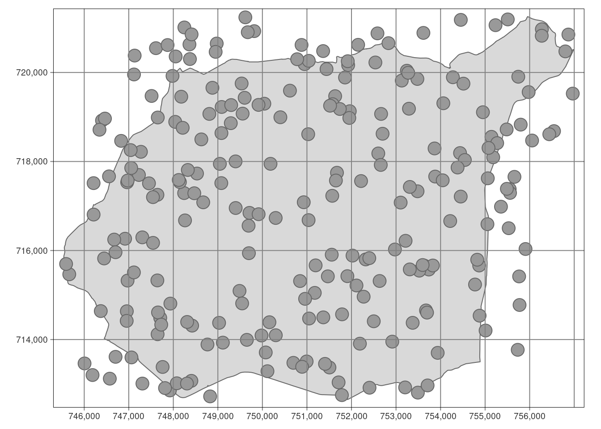
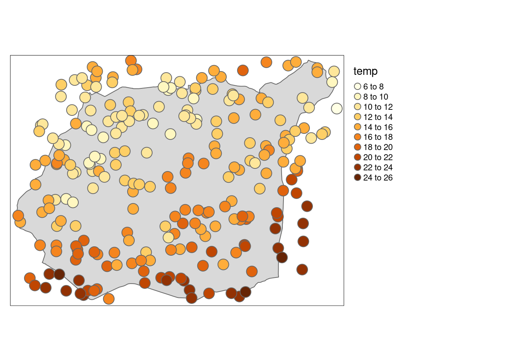
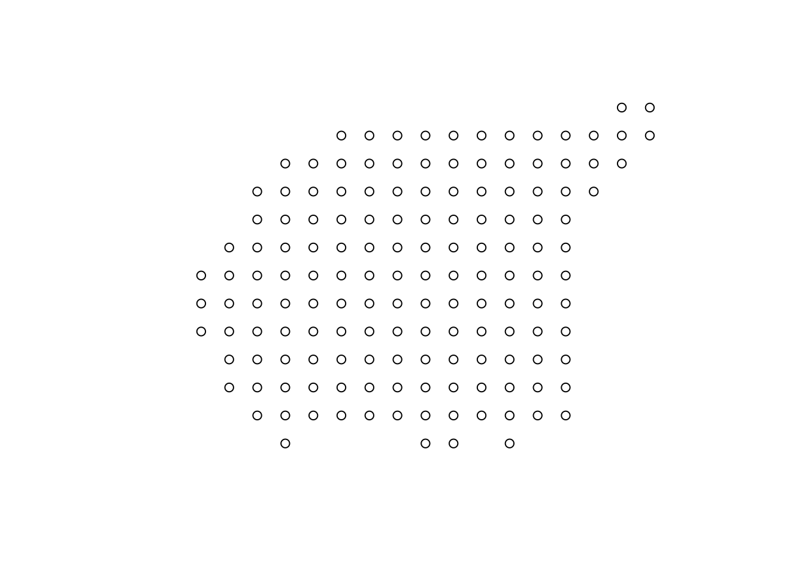
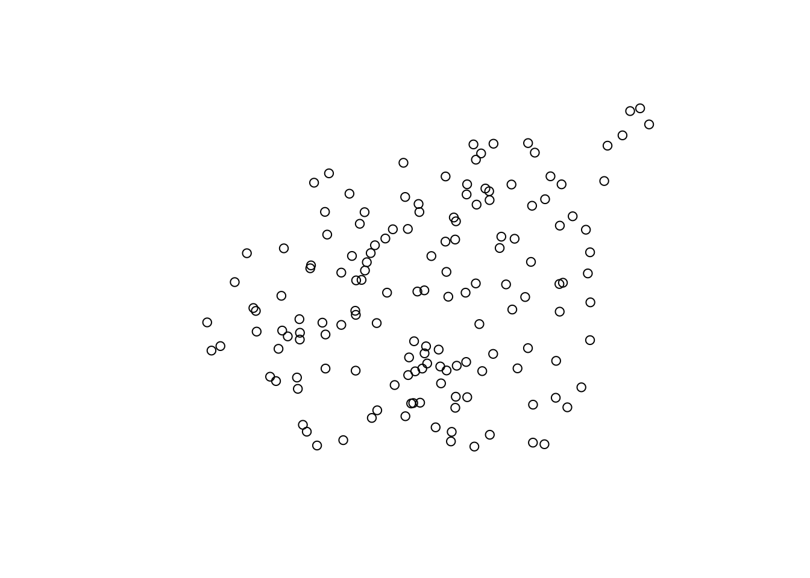
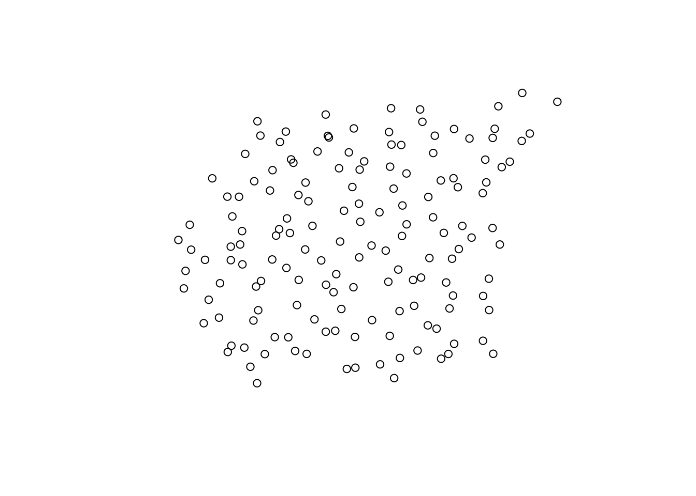
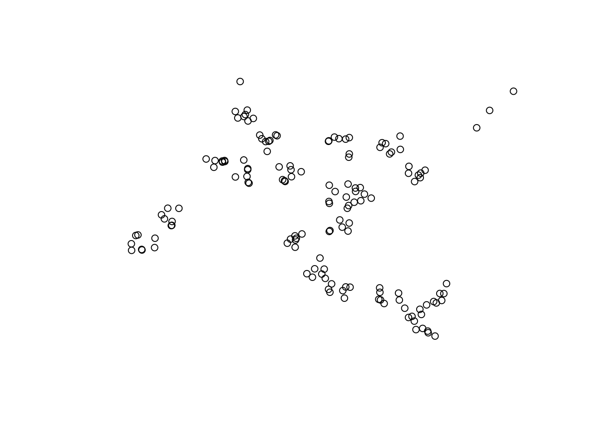
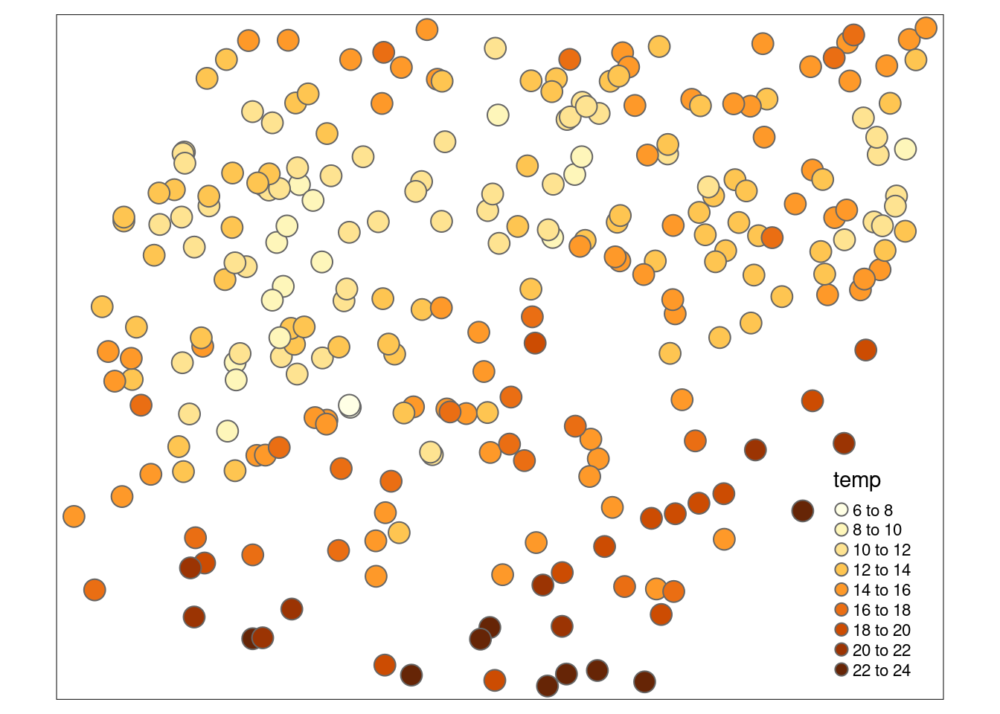
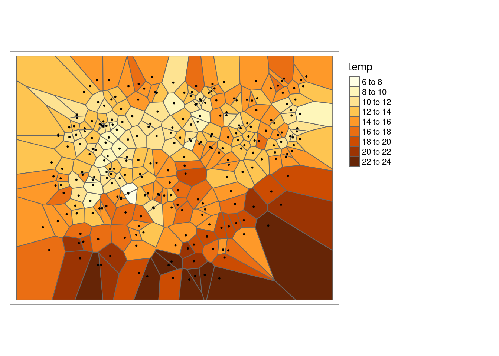
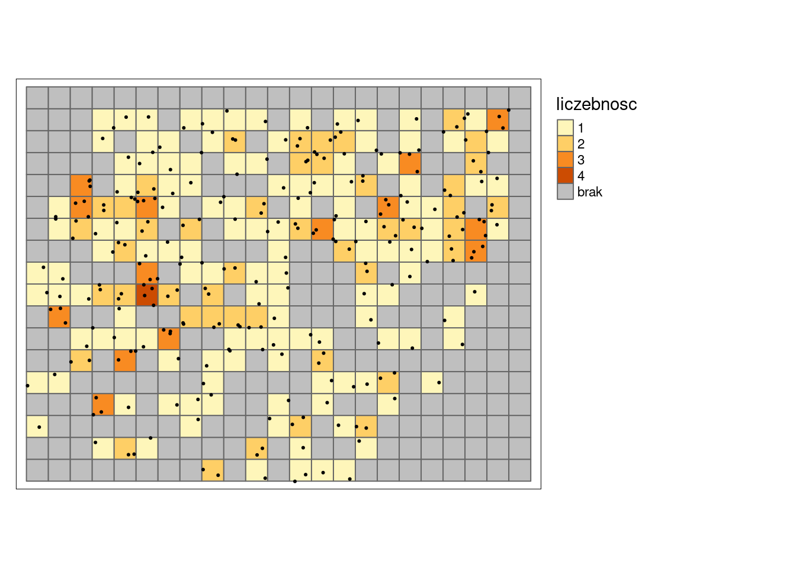

4 Eksploracyjna analiza danych przestrzennych
Odtworzenie obliczeń z tego rozdziału wymaga załączenia poniższych pakietów oraz wczytania poniższych danych:
4.1 Aspekt przestrzenny
4.1.1 Podstawowe terminy
- Populacja - cały obszar, dla którego chcemy określić wybrane właściwości, np. temperatura powietrza.
- Próba - zbiór obserwacji, dla których mamy informacje, np. pomiary ze stacji meteorologicznych. Inaczej, próba to podzbiór populacji.
Zazwyczaj niemożliwe (lub bardzo kosztowne) jest zdobycie informacji o całej populacji. Z tego powodu bardzo cenne jest odpowiednie wykorzystanie informacji z próby, a następnie wnioskowanie na jej podstawie o populacji.
4.1.2 Mapy punktowe
Eksploracyjna analiza danych przestrzennych w przypadku danych punktowych ma na celu:
- Sprawdzenie poprawności współrzędnych (sekcja 4.2).
- Sprawdzenie poprawności danych, w tym między innymi określenie danych odstających lokalnie (sekcja 4.3).
- Wgląd w typ próbkowania danych (sekcja 4.4).
- Rozgrupowanie danych przy próbkowaniu preferencyjnym (sekcja 4.5).
- Ogólny pogląd na zmienność przestrzenną, wykorzystanie prostej automatycznej procedury interpolacji (rozdział 5).
4.2 Sprawdzenie poprawności współrzędnych
Wstępne sprawdzenie poprawności współrzędnych można wykonać poprzez wizualizację danych przestrzennych za pomocą funkcji plot() (rycina 4.1).
tm_shape(granica) +
tm_polygons() +
tm_shape(punkty) +
tm_symbols() +
tm_grid()
Rycina 4.1: Lokalizacja punktów pomiarowych na tle granicy obszaru badań.
4.3 Dane lokalnie odstające
Dane lokalnie odstające oznaczają nietypowe przestrzennie wartości danej cechy; nie zawsze możliwe jest ich określenie używając statystyk opisowych czy histogramów.
Daną lokalnie odstającą może być przykładowo niska wartość otoczona wysokimi wartościami lub też wysoka wartość otoczona niskimi wartościami.
Może to oznaczać zarówno błąd w danych albo wpływ innego czynnika na analizowaną cechę.
Przyjrzenie się wartościom analizowanej cechy można wykonać z użyciem funkcji plot().
Na poniższym przykładzie wyświetlona jest zmienna temp oznaczająca średnią temperaturę dobową (rycina 4.2).
tm_shape(granica) +
tm_polygons() +
tm_shape(punkty) +
tm_symbols(col = "temp", n = 10) +
tm_layout(legend.outside = TRUE)
Rycina 4.2: Wizualizacja zmiennej temp pozwalająca na wyszukanie wartości lokalnie odstających.
Dodatkowo można wykorzystać tryb view w pakiecie tmap do interaktywnego określania wartości oraz numeru punktu (numer wiersza w tabeli atrybutów).
tmap_mode("view")
tm_shape(punkty) +
tm_symbols(col = "temp", n = 10)Aby powrócić do trybu statycznego, trzeba użyć funkcji tmap_mode("plot").
tmap_mode("plot")4.4 Próbkowanie
4.4.1 Podstawowe typy próbowania
Istnieje cały szereg typów próbkowania danych przestrzennych.
Funkcja st_sample() z pakietu sf pozwala na stworzenie kilku typów próbkowania (argument type), między innymi:
- Regularny (ang.regular)
- Losowy (ang.random)
- Losowy stratyfikowany (ang.stratified)
- Preferencyjny (ang.clustered)
4.4.2 Regularny typ próbowania
W regularnym typie próbkowania, kolejne punkty rozłożone są równomiernie na badanym obszarze (rycina 4.3).

Rycina 4.3: Przykład próbkowania regularnego.
4.4.3 Losowy typ próbowania
W losowym typie próbkowania każda lokalizacja ma takie samo prawdopodobieństwo wystąpienia. Dodatkowo, każdy punkt jest losowany niezależnie od pozostałych (rycina 4.4).

Rycina 4.4: Przykład próbkowania losowego.
4.4.4 Losowy stratyfikowany typ próbowania
Losowy stratyfikowany typ próbkowania polega na podzieleniu analizowanego obszaru na regularne komórki, a następnie dla każdej komórki losowana jest lokalizacja punktu (rycina 4.5).

Rycina 4.5: Przykład próbkowania losowego stratyfikowanego.
4.4.5 Preferencyjny typ próbowania
W preferencyjnym typie próbkowania istnieją obszary, które z jakieś powodu (np. specyficzne wartości analizowanej cechy) są znacznie częściej opróbowane niż inne (rycina 4.6).

Rycina 4.6: Przykład próbkowania preferencyjnego.
4.5 Rozgrupowanie danych
Typ próbkowania może wpływać na wartości statystyk opisowych. W odpowiedzi na to istnieje szereg metod rozgrupowywania danych, wśród których można wymienić, między innymi, rozgrupowywanie poligonalne oraz rozgrupowywanie komórkowe. Celem tych metod jest nadanie wag obserwacjom w celu zapewnienia reprezentatywności przestrzennej danych.
Na potrzeby przykładów związanych z rozgrupowaniem danych w pakiecie geostatbook znajduje się zbiór danych punkty_pref.
W tym zbiorze gęściej opróbkowane są niskie wartości temperatury, co powoduje, że średnia dla całego obszaru jest znacznie niższa niż w rzeczywistości.
data(punkty_pref)
tm_shape(punkty_pref) +
tm_symbols(col = "temp", n = 10)
srednia_arytmetyczna = mean(punkty_pref$temp, na.rm = TRUE)
srednia_arytmetyczna## [1] 14.069294.5.1 Rozgrupowanie poligonalne
Rozgrupowanie poligonalne polega na zastosowaniu jednej z metod triangulacji, np. poligonów Woronoja:
- Dla każdego punktu określany jest poligon
- Wyliczana jest powierzchnia poligonu
- Waga każdego punktu wyliczana jest poprzez podzielenie powierzchni indywidualnych przez powierzchnię całego obszaru, a następnie pomnożenie przez liczbę punktów
\[w'_j=\frac{area_j}{\sum_{j=1}^{n}area_j} \cdot n\] , gdzie \(area_j\) powierzchnia dla wybranej obserwacji, a \(n\) to łączna liczba obserwacji
library(dismo)
punkty_pref$id = 1:nrow(punkty_pref)
v = st_as_sf(voronoi(as(punkty_pref, "Spatial")))
v$pow = as.numeric(st_area(v))
v$waga_rp = v$pow / sum(v$pow) * nrow(punkty_pref)
v_df = st_drop_geometry(v[c("id", "waga_rp")])
punkty_pref = merge(punkty_pref, v_df, by = "id")
tm_shape(v) +
tm_polygons(col = "temp", n = 10) +
tm_shape(punkty_pref) +
tm_dots() +
tm_layout(legend.outside = TRUE)
srednia_wazona_rp = mean(punkty_pref$temp * punkty_pref$waga_rp, na.rm = TRUE)
srednia_wazona_rp## [1] 15.874754.5.2 Rozgrupowanie komórkowe
Rozgrupowanie komórkowe (ang. cell declustering) polega na:
- Stworzeniu regularnej siatki dla badanego obszaru
- Policzeniu liczby obserwacji w każdym oczku siatki
- Nadanie wagi dla każdego punktu, zgodnie ze wzorem:
\[w'_j=\frac{\frac{1}{n_i}}{\text{liczba komorek z danymi}} \cdot n\]
, gdzie \(n_i\) to liczba obserwacji w komórce, a \(n\) to łączna liczba obserwacji
siatka_n = st_make_grid(granica, cellsize = 500)
siatka_n = st_as_sf(siatka_n)
punkty_pref$liczebnosc = 0
st_crs(siatka_n) = st_crs(punkty_pref)
siatka_nr = aggregate(punkty_pref["liczebnosc"], by = siatka_n, FUN = length)
# siatka_nr$odw_licz = 1 / siatka_nr$liczebnosc
punkty_pref$liczebnosc = NULL
punkty_pref = st_join(punkty_pref, siatka_nr)
punkty_pref$waga_rk = ((1 / punkty_pref$liczebnosc) /
sum(!is.na(siatka_nr$liczebnosc))) *
nrow(punkty_pref)
tm_shape(siatka_nr) +
tm_polygons(col = "liczebnosc", n = 10, textNA = "brak") +
tm_shape(punkty_pref) +
tm_dots() +
tm_layout(legend.outside = TRUE)
srednia_wazona_rk = mean(punkty_pref$temp * punkty_pref$waga_rk, na.rm = TRUE)
srednia_wazona_rk## [1] 14.266124.5.3 Porównanie metod rozgrupowania
Średnia wartość temperatury dla badanego obszaru wynosiła 15,59 stopni Celsjusza, jednak w preferencyjnej próbie ta wartość wynosiła 14,07 stopni Celsjusza. Porównując dwie zastosowane metody rozgrupowania warto zauważyć, że najbliższy wynik uzyskano korzystając z rozgrupowania poligonalnego, które nieznacznie zawyżyło rzeczywistą wartość temperatury. Rozgrupowanie komórkowe było w tym przypadku mniej dokładne, wyraźnie zawyżając wartości temperatury.
| Średnia arytmetyczna | |
|---|---|
| Populacja | 15.5913 |
| Próba | 14.0693 |
| Rozgrupowanie poligonalne | 15.8747 |
| Rozgrupowanie komórkowe | 14.2661 |
W przypadku metod rozgrupowania należy jednak pamiętać, że ich wynik zależy od szeregu wprowadzonych parametrów, w szczególności granic badanego obszaru oraz zastosowanej wielkości oczka siatki.
4.6 Zadania
- Wykonaj mapę pokazującą przestrzenny rozkład wartości NDVI w zbiorze
punkty. (Dodatkowo: spróbuj użyć do tego pakietu tmap -install.packages("tmap")). - Stwórz nowy obiekt
punkty4326, który będzie zawierać pomiary z obiektupunkty, ale będzie w układzie odwzorowania WGS 84. Wykonaj mapę pokazującą przestrzenny rozkład wartości NDVI w zbiorzepunkty4326. Czy dostrzegasz jakieś różnice? - Określ i opisz typ próbkowania danych
punktyoraz danychpunkty_pref. - Porównaj średnią arytmetyczną zmiennej
srtmz obiektupunkty_prefze średnimi uzyskanymi metodami rozgupowania poligonalnego i rozgrupowanie komórkowego. (Dodatkowo: sprawdź różne wielkości oczka siatki w rozgrupowaniu komórkowym).